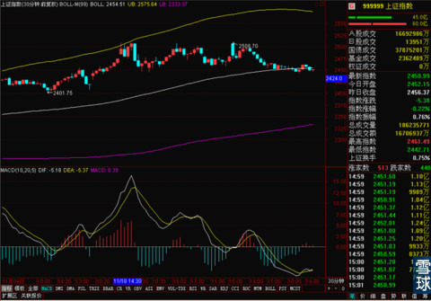

沪港通上线第三天，沪港通再次大幅降温，净买入额持续缩小。截止下午收盘，总额度仅仅使用了12.2%，两地剩余额度双双超100亿元。沪股通每日额度130亿还剩103.88亿；港股通每日额度105亿人民币还剩102.56亿。
里昂证券已经第一个跳出来拿沪港通和2007年胎死腹中的“港股直通车”做对比，说沪港通已经没有了希望，可能重演当年恒生指数大跌的覆辙。微博上各种嘲笑沪港通的言论遍地开花。
沪港通真的完蛋了么？看似里昂证券有理有据的说法背后有些什么？
中信证券2012年7月20日晚间公告，当天召开的董事会通过了《关于全资子公司中信证券国际有限公司收购里昂证券100%股权的议案》，将以12.52亿美元的总对价将里昂证券全部股权纳入囊中。
对，没错里昂证券早就被中信证券收购，而且里昂证券在09年之后对A股的投资就基本不依赖QFII的额度了。所以里昂证券的说法从他的背景上来说是不足为据的。
同时，除了昨天说到的对沪港通开通之后对各方利益博弈的猜测之外，我们还应该想到一个问题，就是QFII刚开始事情的景象。当时QFII在大熊市缓步建仓有色和稀土等矿物制品的股票，被中国投资者讥笑了大半年的时候。后来拿下高收益之后QFII的增仓路径一直是国内投资者关注的重点。
现在所有人的眼光都牢牢的盯着沪港通的额度使用情况，这个时候外资会大大方方的建仓给所有人看么？不可能的，不然就是等着被众人围着打。
所以在一定默契下，外资放缓沪港通的额度使用，这边小盘股和创业板连日火热，市场的眼光将在一段时间之后离开沪港通的额度使用情况和仓位增长情况。这个时候悄悄的建仓才是对外资来说最合理的建仓节奏。
还是那句话，一切还只是刚刚开始，好戏都在后面腻。
本周的关键是能不能守住周线BOLL上轨2457，今天收盘点位是2450.99，稍微低于我们想要的2457，本周还有两个交易日。而从30分钟线上看，上证指数刚好在30分钟线中轨附近徘徊，MACD的形态还不算被动，有上攻的可能，也有再向下一点做个双底的可能。

所以，沪港通的额度并不难说明太多的问题，骑驴看唱本，这事得走着瞧。现在急吼吼跑出来诋毁沪港通的不是有特殊目的就是只看眼前利益的坐井观天之人。
而且和两周前提示过大家的一样，现在沪港通开放前后，一直弱于沪市的深市将有一波追赶的行情出现，今天深证收红，沪市收跌有可能是短期内这样情况的一个开始。这才是最近值得我们关注的事情。
 |
沪港通上线第三天，沪港通再次大幅SaiLv 2014-11-19 17:43:16 |
Copyright © 1996-2014 SINA Corporation All Rights Reserved.